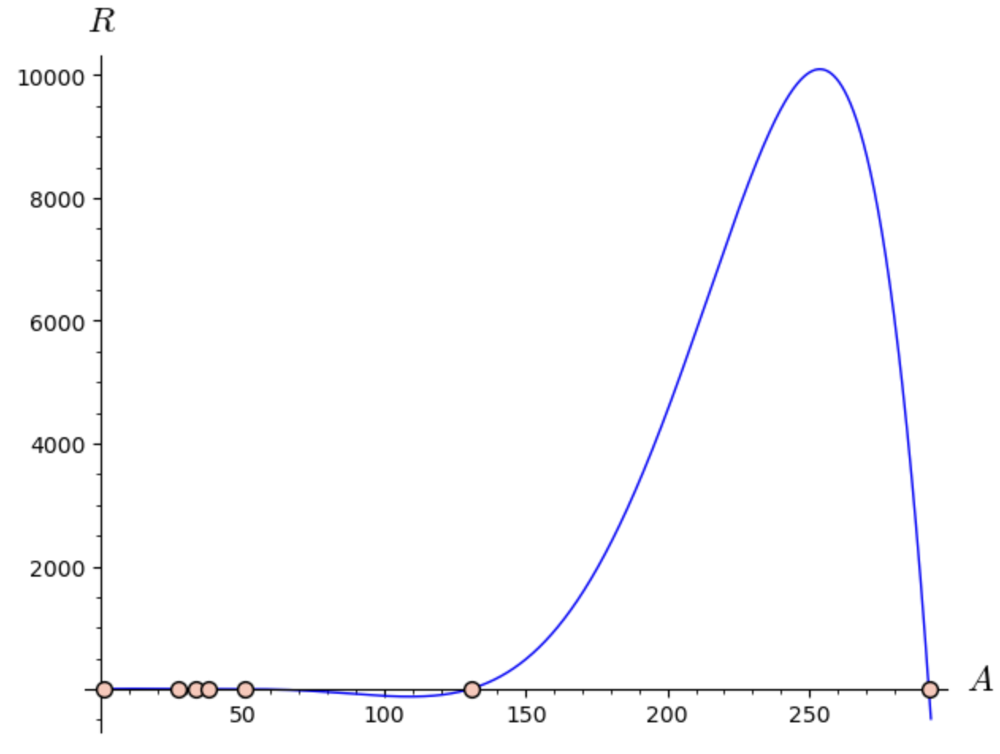
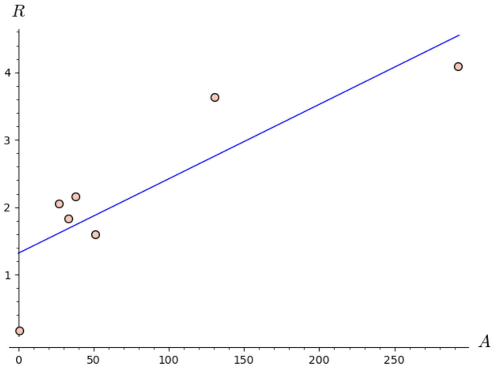
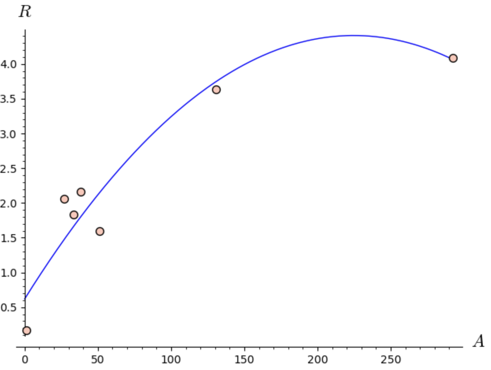
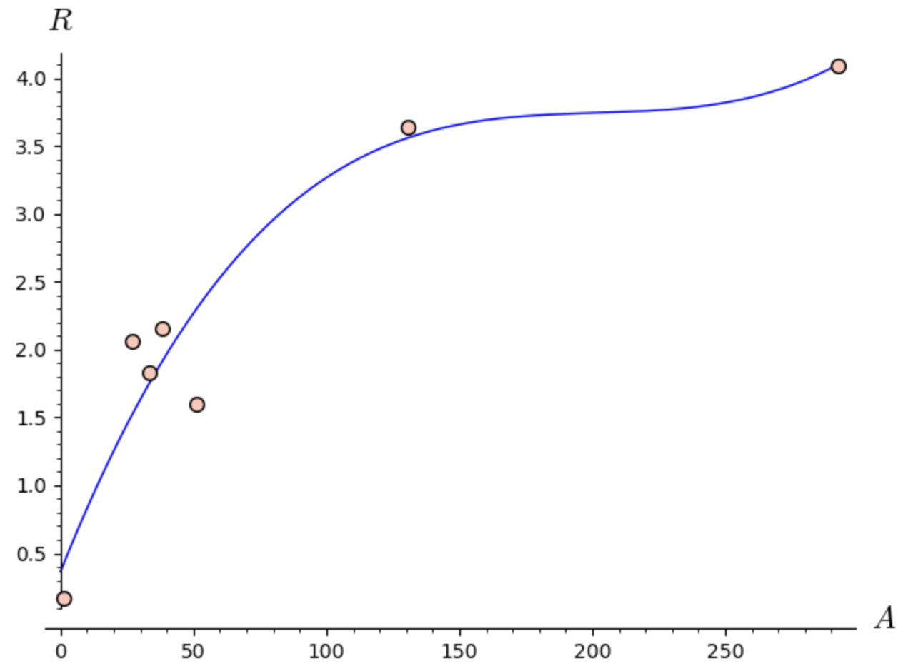
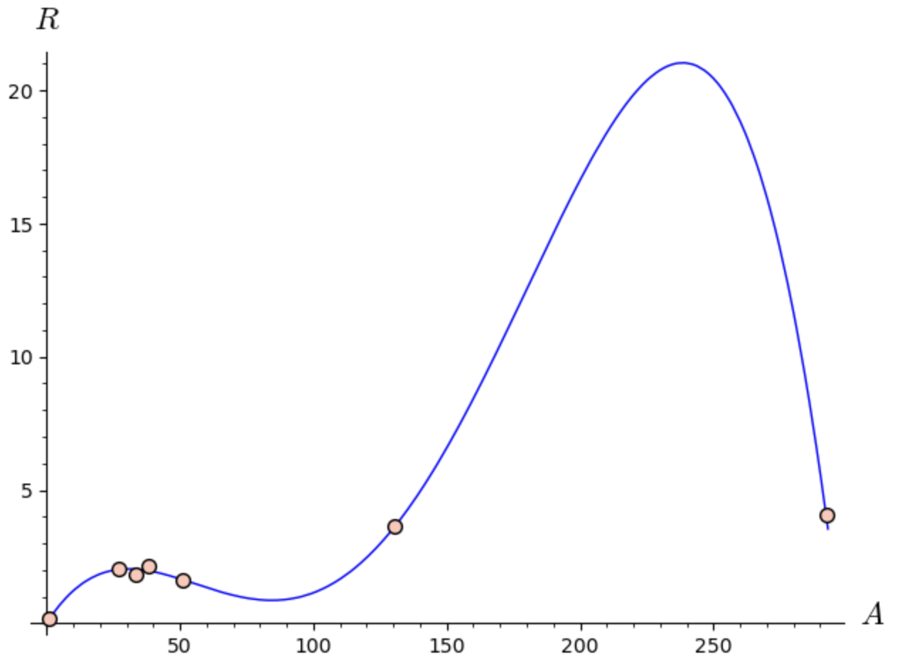
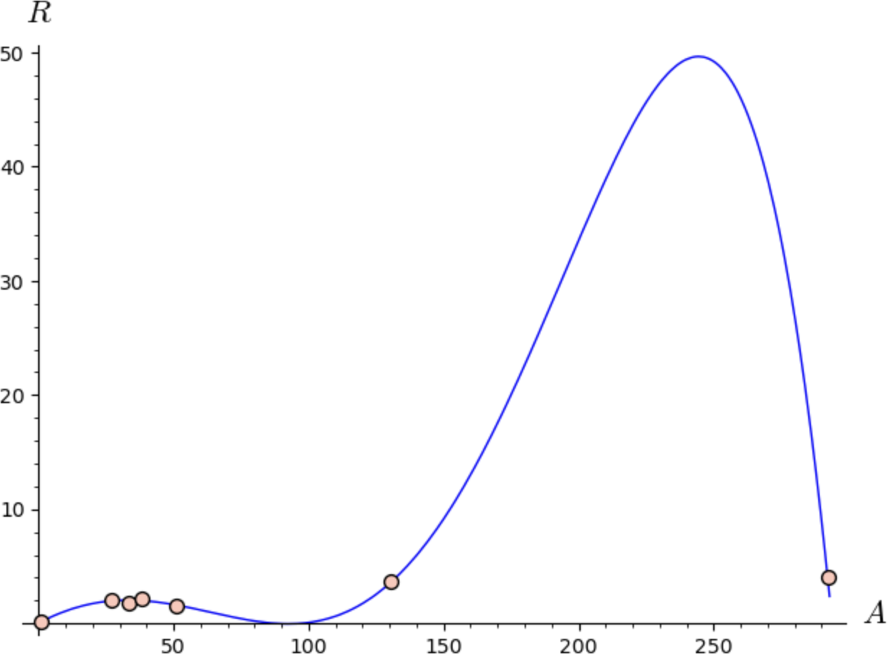
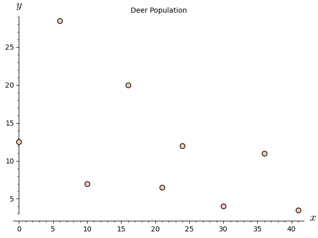
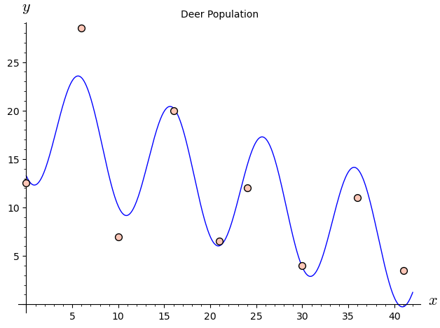

Section 7.3 Polynomials
Polynomial models are often convenient to use because they are easy to differentiate and integrate. Theorem 7.3.1 is a well-known result from algebra about fitting a polynomial model to data.
Theorem 7.3.1.
Given a set of data \(\{(x_i, y_i)\mid i=1, 2, \dots, n\}\text{,}\) where \(x_i\ne x_j\) for all \(i\ne j\text{,}\) there exists a unique polynomial \(p(x)\) of degree at most \(n-1\) such that
Graphically, this theorem means that the graph of \(y = p (x)\) goes through each data point (i.e. it is a perfect fitting model). This sounds like a utopia, but is it really?
Example 7.3.2. Three Data Points.
Consider the problem of fitting a second-degree polynomial of the form \(y = ax^2 +bx+c\) to the set of three data points \(\{(1, 2), (2, 4), (3, 5)\}\text{.}\) This means we want values of \(a\text{,}\) \(b\text{,}\) and \(c\) such that
This set of linear equations can be written in matrix form as
This matrix equation has the generic form \(A\mathbf{x} = \mathbf{b}\) where \(\mathbf{x} = (a, b, c)\) is the vector of unknowns. It can be shown that \(A\) is invertible. Thus there is a unique solution to this matrix equation, \(\mathbf{x} = A^{-1}\mathbf{b}\text{.}\)
So we get the solution \(\mathbf{x} = (-1/2, 7/2, -1)\) so that the model is \(y=-\frac12 x^2 + \frac72 x -1\text{.}\)
SageMath will automatically calculate this polynomial for us using an algorithm equivalent to the one described above.
Next we add \((4,2)\) to the data set and fit a second degree polynomial to these four data points. Ideally, we want to find \(a\text{,}\) \(b\text{,}\) and \(c\) such that
This set of linear equations can be written in matrix form as
which, as before, has the generic form \(A\mathbf{x} = \mathbf{b}\text{.}\) However, note that \(A\) is not square, so it is not invertible. Further analysis reveals that this equation does not even have a solution, so there is no polynomial that fits these four data points perfectly. We will have to settle for a “best–fit” polynomial model. As in Chapter 6 when we fit a linear model to a set of data, we will use a least–squares criterion to find our model. That is, we want a polynomial \(p(x)\) that minimizes the number
The resulting model is called a least–squares polynomial model. To find this model we will find a least-squares solution to the above matrix equation.
Definition 7.3.3. Least-squares Solution.
Let \(A\) be an \(m\times n\) matrix and \(\mathbf{b}\) be an \(m\times 1\) vector. A least-squares solution of \(A\mathbf{x}=\mathbf{b}\) is an \(n\times 1\) vector \(\hat{\mathbf{x}}\) such that
The idea behind this definition is that \(\hat{\mathbf{x}}\) gets \(A\mathbf{x}\) as close to \(\mathbf{b}\) as possible. The following theorem which we present without proof tells us how to find \(\hat{\mathbf{x}}\text{.}\)
Theorem 7.3.4.
Every least-squares solution of \(A\mathbf{x} = \mathbf{b}\) must satisfy the Normal equation
If \(A^T A\) is invertible, then there is a unique least-squares solution \(\mathbf{x}\) given by
Note that this does not say that a general matrix equation \(A\mathbf{x} = \mathbf{b}\) has a unique least-squares solution. In general, there may be many least-squares solutions. However, if \(A^T A\) is invertible, then the solution is unique. When fitting curves to data, \(A^T A\) is usually invertible so we can this formula to calculate \(\hat{\mathbf{x}}\text{.}\) This technique can also be used to fit other types of models to data, as we will see later.
For our current example, we can enter
So a least-squares solution is \(y = -\frac54 x^2 + \frac{127}{20}x - \frac{13}4\text{.}\)
Example 7.3.5. Calculating \(R^2\) Value.
In Section 6.6 we defined the coefficient of variation \(R^2\) as a measure of how well a line fits a set of data. We then applied this idea to linearizable models by calculating the \(R^2\) value for the straight–line fit to the transformed data. Polynomial models are not linearizable, so to calculate \(R^2\) values for these types of models, we must use the definition. The definition is
where \(SS_{Tot} = \sum (y_i - \overline{y})^2\text{,}\) \(SS_{Res} = \sum (y_i - \hat{y}_i)^2\text{,}\) \(\overline{y}\) is the mean of all the \(y\)-values in the data set, and \(\hat{y}_i\) is the predicted value of \(y_i\) based on the model. Here we use our model \(y = -\frac54 x^2 + \frac{127}{20}x - \frac{13}4\) to calculate \(\hat{y}_i\text{.}\)
This indicates a very good fit.Example 7.3.6. Selecting a Best Polynomial Model.
Consider the data in the table below which gives the area \(A\) (in thousands of square miles) and the total length of railroad track \(R\) (in thousands of miles) of seven different countries (data from The World Almanac and Book of Facts, 2007, World Almanac Books). We want to use a polynomial to model \(R\) in terms of \(A\text{.}\)
According to Theorem 7.3.1, there is a unique polynomial of degree at most 6 that fits this data perfectly. We can easily graph \(R\) vs. \(A\) and fit a sixth degree polynomial trendline. The result is shown below.

Notice that the \(R^2\) value is 1, so the model fits the data perfectly. However, note the large oscillation between \(A = 130\) and \(300\) and that the model predicts negative values of \(R\) for \(A\) around 100. This is totally unreasonable, so this is a terrible model even though it fits the data perfectly. The large oscillation seen in the graph of this model is typical of a high–degree polynomial model such as this. To find a better model, we can fit polynomials of degree 1 through 5 to the data, and keep track of their \(R^2\) values. The code and graphs are shown below.





To choose the best model, we need to examine more than just the \(R^2\) values. We also need to consider how well they will make predictions and their simplicity. The fourth and fifth degree models have the highest \(R^2\) values, but they both have oscillations that seem unreasonable in the context of the problem, so they are not the best options. The first degree model does not capture the trend of the data very well, so it is not a good option either. The second and third degree models have very similar \(R^2\) values and their graphs look very similar. So we will choose the simpler of the two options, the second degree model, as the best. However, one could make a case that the third degree model is the best.
This least-squares matrix approach can be applied to models other than polynomials as illustrated in the next example.
Example 7.3.7. Deer Population.
The following table gives the number of deer in a hypothetical forest for various years between 1941 and 1982. Our goal is to model the population in terms of the year.
To make the data values smaller and easier to work with, we transform them by subtracting 1941 from the year and dividing the population by 1000, yielding the data in the table below.

Examining the graph of the transformed data in the graph we see that the population fluctuates from a high to a low and back to a high in about a 10–year cycle.
The periodic nature of the data suggests we use sine or cosine functions to model it. Since the period is approximately 10, our model will have terms of \(\cos (\pi x/5)\) and \(\sin (\pi x/5)\text{.}\) Also note that the population shows a downward trend. So we will include an \(x\) term in the model with a (likely) negative coefficient. Thus our model is of the form
Ideally we want to satisfy the system of equations:
which has the matrix form
As before, this matrix equation has the generic form \(A\mathbf{x} = \mathbf{b}\text{.}\) Calculating the least-squares solution, \(\hat{\mathbf{x}} = (A^T A)^{-1} A^T \mathbf{b}\text{,}\) to this system as done previously, gives the approximate solution \(\hat{\mathbf{x}} = (18.965, -0.314, -5.693, -2.915)\text{.}\) So the model is
Luckily, these calculations are built right into Sage's find_fit command.

The figure above shows a graph of the model on top of the data. The model appears to fit the data relatively well, but many refinements could be made.
Subsection 7.3.1 General Guidelines for Selecting a Best Model
In general when constructing empirical models, one has many different types of models from which to choose. Deciding which one is best is not easy and is often very subjective, but here are a few simple guidelines:
Consider the \(R^2\) value, but don’t rely solely on it.
Look for a pattern in the residuals. If there is a pattern, the model should be refined.
Consider how good the model is for making predictions between data values. If it oscillates or would give unreasonable values, look for a better model.
Consider “end” behavior. If the data appears to be “leveling off” at the end, but the model is increasing (or vice-versa), consider a different model.
Consider the simplicity of a model. In general, the fewer the terms, the better.
We must also stress that when using an empirical model such as those discussed in this section and in Chapter 6 to make predictions, the predictions are always point–estimates of the true values. These predictions should never be presented as precise certainties. Books on statistics and regression discuss how to use a point–estimate to form a confidence interval for the true value (a range of possible values), but this topic is beyond the scope of this course.
Exercises 7.3.2 Exercises
1.
Fit different polynomial models to the data in the table below and select the best one. Explain how you determined which one is best.
2.
Calculate the \(R^2\) value for the model fit to deer population data in Example 7.3.7.
3.
One useful property of polynomials is that they are easy to differentiate and integrate. Suppose a researcher observes a particle moving in a straight line and measures the particle’s velocity relative to its starting position at several points in time as shown in the table below.
(a)
Fit several polynomial models to the data and choose the one that best models the velocity. (Suggestion: When choosing the best model, don’t rely strictly on the \(R^2\) value. Put a large emphasis on simplicity.)
(b)
The acceleration of the particle at time \(t\) is \(a(t) = v'(t)\text{.}\) Use your model in part (a) to estimate \(a(1.8)\text{.}\) (The command to take the derivative of a function \(f(x)\) is diff(f,x).)
(c)
The total distance traveled over the time interval \([a, b]\) is
Use your model from part (a) to estimate the total distance the particle traveled over the interval \([0,7.3]\text{.}\) (The command to obtain the definite integral of \(f(x)\) from \(a\) to \(b\) is integrate(f(x),(x,a,b)).)